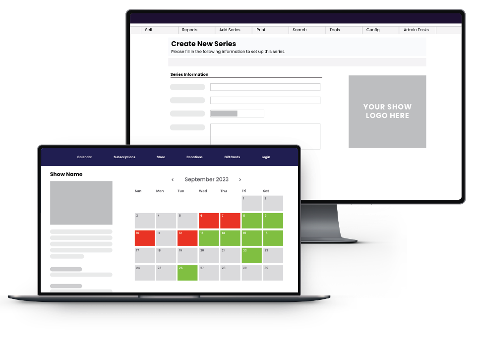

More Than a Ticketing Software
Professional is loved by ticketing & box office managers, development leaders, marketing professionals, and executive directors alike. That’s because we’re not just a ticketing software. Through an unmatched suite of features and partnerships with industry-leading technologies, our platform is purpose-built to grow live-event organizations faster, while saving time and reducing headaches for your team. Our commitment to excellence extends beyond mere ticketing solutions; it encompasses a comprehensive approach to empower every facet of your live-event organization. Ticketing and box office managers appreciate our user-friendly interface and robust functionality, streamlining their daily tasks and ensuring a seamless ticketing experience for patrons. Development leaders find in us a reliable ally, aiding them in fostering sustainable growth and expanding the reach of their events. Marketing professionals leverage our platform's data-driven insights and integrated tools to execute targeted campaigns, enhancing audience engagement and driving ticket sales. Executive directors value our strategic partnerships with industry leaders, ensuring that our platform remains at the forefront of technological innovation. In essence, we are not just a software provider; we are a catalyst for success, dedicated to elevating your live-event organization to new heights by combining efficiency, innovation, and unparalleled industry expertise.
